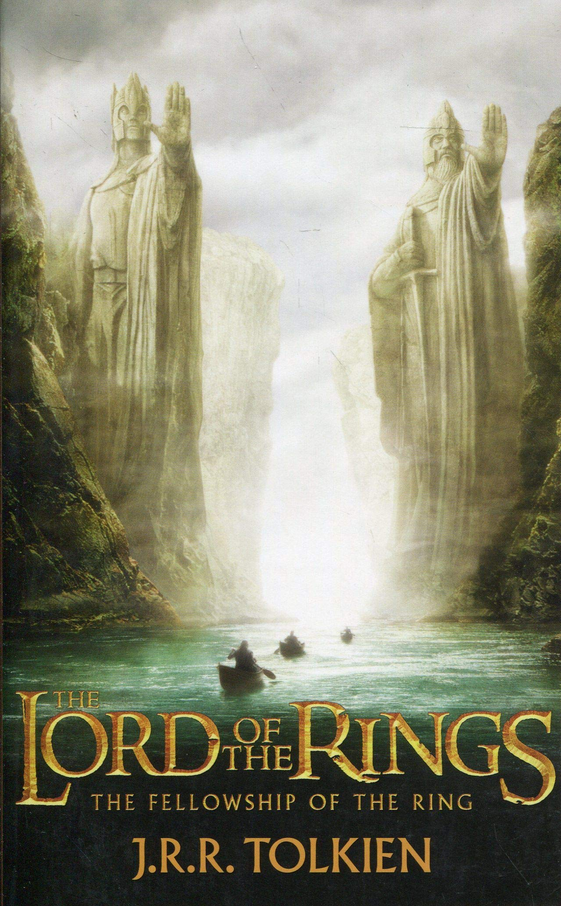

The Fellowship of the Ring
Story Line
In the Second Age of Middle-earth, the lords of Elves, Dwarves, and Men are given Rings of Power. Unbeknownst to them, the Dark Lord Sauron forges the One Ring in Mount Doom, instilling into it a great part of his power, in order to dominate the other Rings so he might conquer Middle-earth.
A final alliance of Men and Elves battles Sauron's forces in Mordor. Isildur of Gondor severs Sauron's finger and the Ring with it, thereby vanquishing Sauron and returning him to spirit form. With Sauron's first defeat, the Third Age of Middle-earth begins. The Ring's influence corrupts Isildur, who takes it for himself. Isildur is later killed by Orcs and the Ring is lost in a river for 2,500 years until it is found by Gollum, who owns it for five centuries. The Ring is then found by a hobbit named Bilbo Baggins, who is unaware of its history.
Sixty years later, Bilbo celebrates his 111th birthday in the Shire, reuniting with his old friend, the wizard Gandalf the Grey. Bilbo reveals that he intends to leave the Shire for one last adventure, and he leaves his inheritance, including the Ring, to his nephew Frodo. Gandalf investigates the Ring, discovers its true nature, and learns that Gollum was captured and tortured by Sauron's Orcs, revealing two words during his interrogation: "Shire" and "Baggins." Gandalf returns and warns Frodo to leave the Shire. As Frodo departs with his friend, gardener Samwise Gamgee, Gandalf rides to Isengard to meet with the wizard Saruman, but learns that he has joined forces with Sauron, who has dispatched his nine undead Nazgûl servants to find Frodo...
Box Office

The Fellowship of the Ring was released on 19 December 2001 in 3,359 cinemas where it grossed $47.2 million on its opening weekend.
The world premiere was held at the Odeon Leicester Square in London. It went on to make $315.5 million in North America and $572.3 million in the rest of the world for a worldwide total of $887.8 million.
Box Office Mojo estimates that the film sold over 54 million tickets in the US in its initial theatrical run.